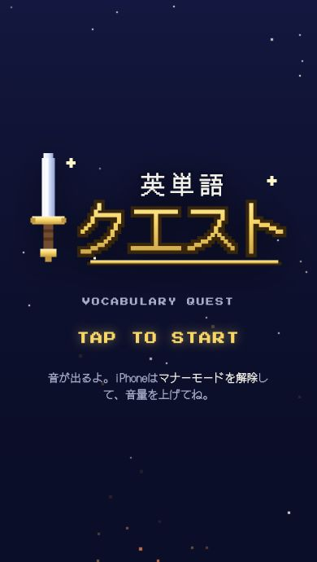
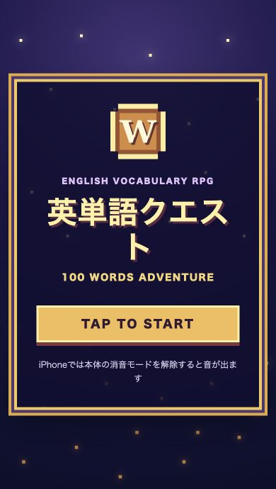

CLAUDE MAX × CHATGPT PRO
AIの最上位プラン。月3万円、払う価値はあるか。
同じ指示で、作って比べる。
ゲームも、動画も、プレゼンも。
同じ指示。ふたつの答え。


生成AI横並び検証室
スペックの先にある、
できあがりを見よう。
できあがりを
ClaudeとChatGPTの最上位プランに、同じお題を。
実際に作って、時間も、人間の対応も、成果物も記録します。
課金する価値を、あなたの使い方で考えるために。
Claude
Max 20x
Fable 5.1
ChatGPT
Pro 20x
GPT-6 Astra
#01のChatGPTはGPT-5.6 Sol、#02・#03はGPT-6 Astraで検証。「月3万円」は検証の問いで、現在の税込定価を示す料金表ではありません。
検証 01
ゲームアプリ
お題は同じ。
遊び心は、ふたつ。
中学生向けの英単語ゲーム「英単語クエスト」。
同じ2本の指示から、ブラウザで遊べるゲームが生まれました。
Claude Fable 5.1 / Cowork
タップして遊ぶChatGPT GPT-5.6 Sol / Codex
タップして遊ぶゲームを開いても、このページはそのまま。
画面上部の「紹介ページに戻る」で戻れます。
今回の記録
完成までの道のりも、
比較する。
| 記録項目 | Claude | ChatGPT |
|---|---|---|
| AI作業時間 | 25分 | 2時間 |
| 確認に答えた回数 | 0回 | 11回 |
| 追加の指示 | 1回 | 2回 |
| 週間の使用枠 | 4%Fable枠 | 7% |
| 要件の達成状況 | ○ 16 | ○ 14 / △ 1判定対象外 1 |
時間はAIの作業のみ。人間の確認・待ち時間は含みません。使用枠の%は各サービスの表示上の変化で、共通の計算コストではありません。
この回のChatGPTは GPT-5.6 Sol です。
検証の詳細を無料で読む検証 02
ショート動画
45秒に、
どう詰め込むか。
同じ記事と、同じ5枚の画像から。
1通の指示で、BGM付きの縦型動画に。
再生できない場合はYouTubeからご覧ください。
動画の内容は#01、下の記録は動画を作った#02の結果です。
今回の記録
どちらも、
最初の指示で完成。
| 記録項目 | Claude | ChatGPT |
|---|---|---|
| AI作業時間 | 34分 | 19分 |
| 確認に答えた回数 | 2回アクセス承認 | 0回 |
| 追加の指示 | 0回 | 0回 |
| 週間の使用枠 | 3% | 0%表示上の変化なし |
| 必須項目 | 6 / 6 | 6 / 6 |
ともに45秒・1080 × 1920・BGM付きMP4。
時間はAIの作業のみ。人間の確認・待ち時間は含みません。使用枠はサービスごとの表示で、0%は「使用なし」を意味しません。
検証の詳細を無料で読むHOW WE COMPARE
結果だけでなく、
そこまでを公開。
時間
AIが実際に
作業していた時間。
人間の対応
確認への返答と、
追加した指示。
使用枠
各サービスの枠に対する
表示上の変化。
成果物
何が完成し、
要件を満たしたか。
同じ初期指示から始めていますが、環境や追加対応は各記事のとおり異なります。ここにあるのは、それぞれの課題・それぞれの回の記録。AI全体の優劣を決めるものではありません。